Rereading of visual compositions presented in the book “A Primer of Visual Literacy" by Donis A. Dondis, inspired by synthwave and retrowave aesthetic movements.
Created during the 1st semester of Multimedia Production undergraduate program.
.polaridades.
🇧🇷 Releitura das composições visuais apresentadas no livro “Sintaxe da Linguagem Visual” de Donis A. Dondis, inspirado nos movimentos estéticos synthwave e retrowave.
Criado durante o 1º semestre da graduação em Produção Multimídia no Centro Universitário Senac.
NOVEMBER, 2019.


 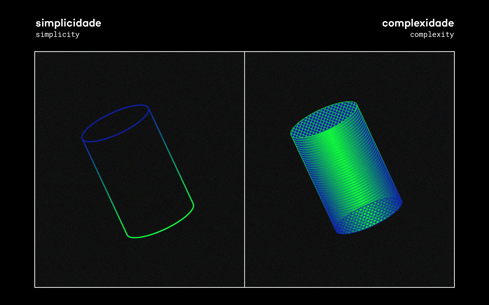
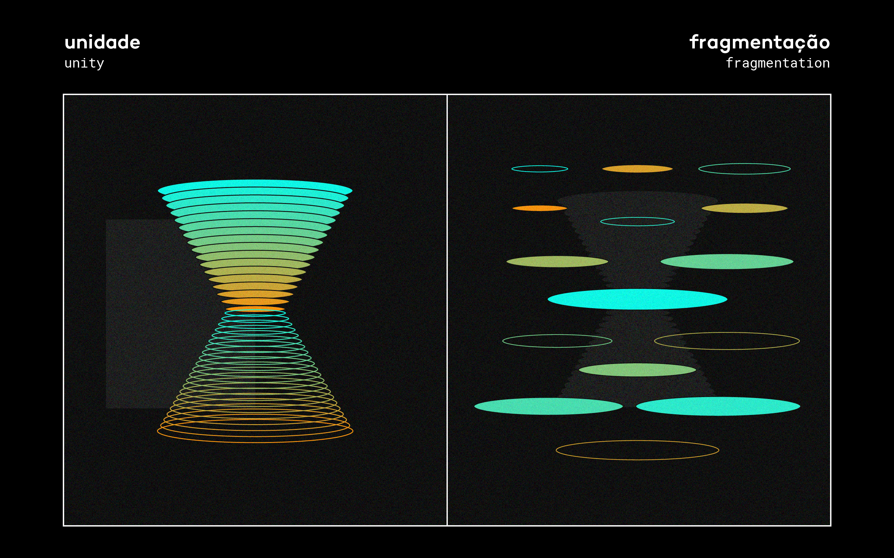
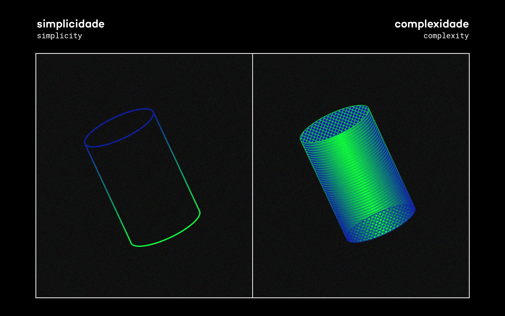
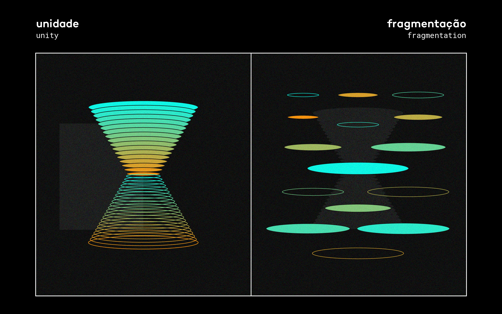

 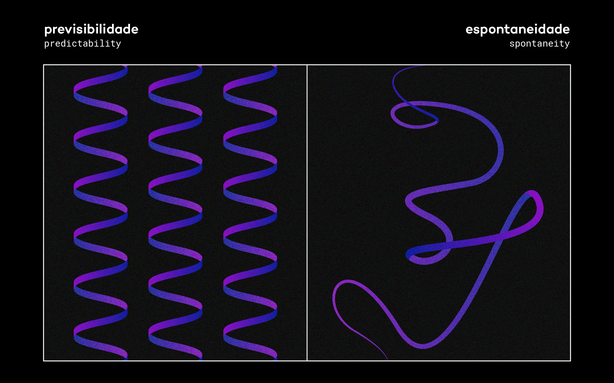
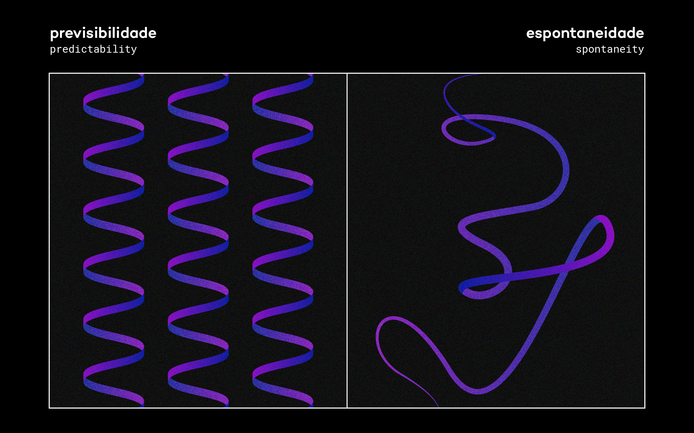

 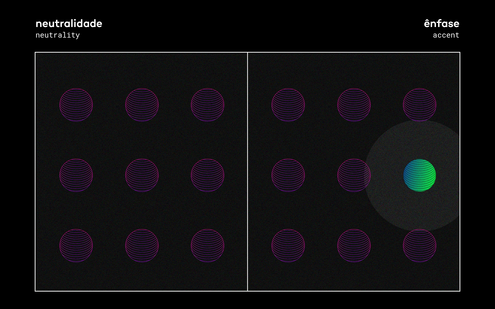
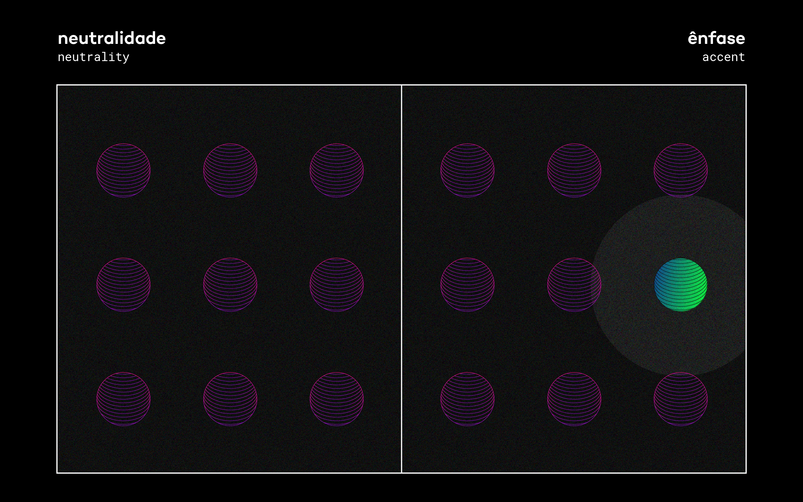
 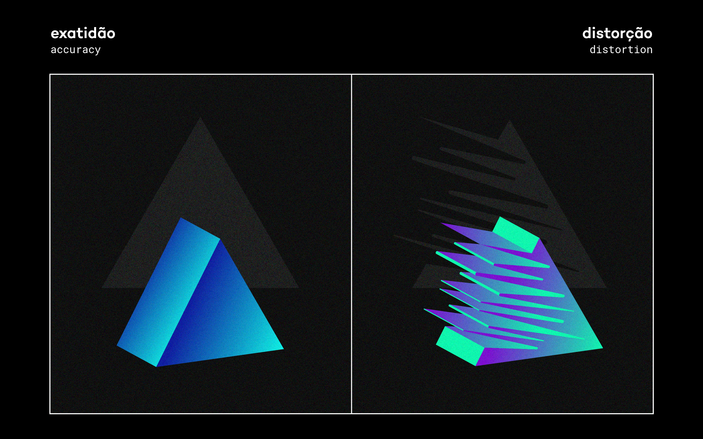
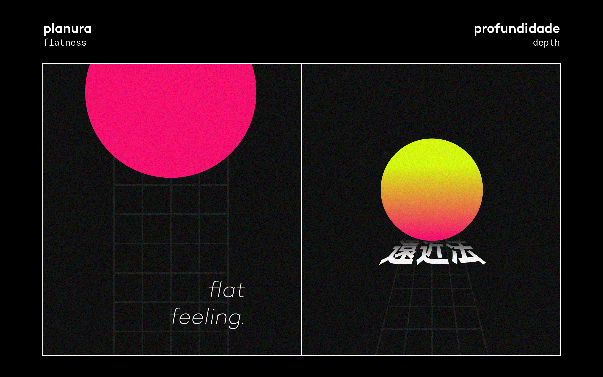
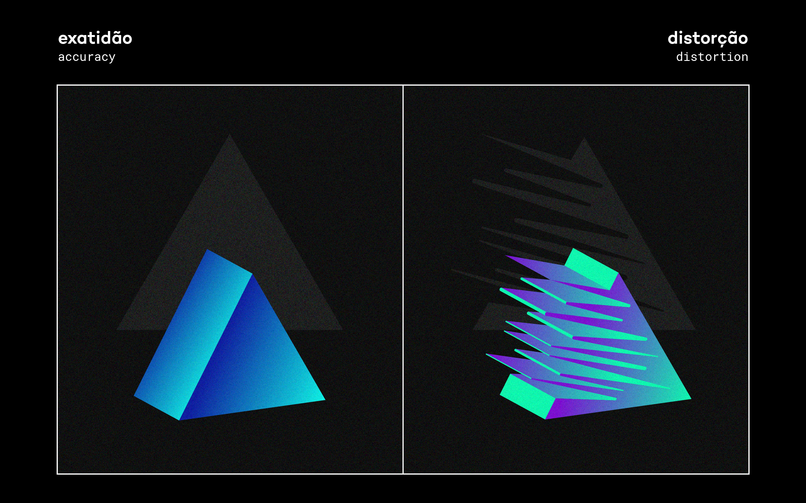
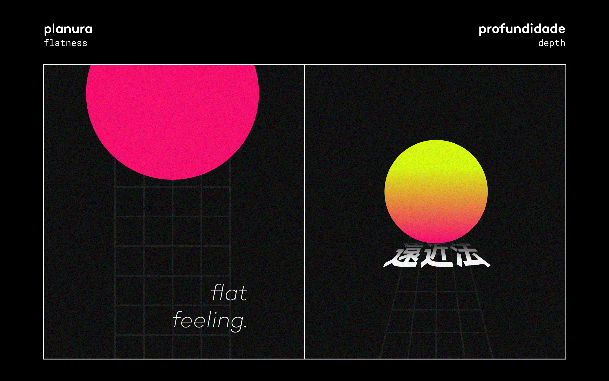